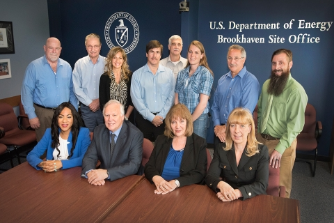

In 2016, the U.S. Department of Energy (DOE) Sustainability Performance Office recognized 15 teams and individuals representing DOE sites and national laboratories. These winners are being recognized for their outstanding sustainability contributions, including accomplishments in managing pollution, waste, energy, water, and vehicle fleets.
Below find the descriptions of the 2016 DOE Sustainability Award winners organized by award category.
Terry Cothron Builds Bridges to a Bright Future at Y-12
Terry Cothron’s 44-year career has been dedicated to the protection of the environment in communities and regions across Tennessee. For the past 25 years, he has helped create a renaissance in modernization and environmental improvement at the Y-12 National Security Complex (Y-12) and the Oak Ridge Reservation.
Cothron’s key roles at Y-12 include managing outreach to environmental regulators, site planning and characterization, and promoting sustainable features in new construction. His leadership resulted in the New Hope Center receiving certification as a Leadership in Energy and Environmental Design (LEED) building, and for LEED principles to be applied to the construction of the Jack Case Center. These buildings save 250,000 gallons per year of potable water, 625,000 kWh per year of electricity, and $100,000 annually in energy costs compared to similar structures.
Cothron’s career has helped pave the way to a bright future, transforming Y-12 with the removal of mountains of legacy materials, constructing modern sustainably built buildings, and award winning environmental programs. As he likes to say, “We’re cleaning up the past, protecting the present, and anticipating the future.”
Thanks to Eric Haukdal, You Can Teach an Old Building New Tricks
From 2008-2015, Eric Haukdal served as the energy and environmental sustainability manager for the Forrestal Building. In this role, he has helped transform the 1960’s-era headquarters building into a documented high-performance sustainable building that looks toward the future.
Haukdal led several initiatives including implementing a rooftop solar array, a cool roof covering 90,000 square feet, a reduced schedule for the Forrestal building corridor lights, consolidation of 24 small chillers into a single plant, and zone sub-metering to measure occupant electricity use.
Don’t just take our word for it, however. Haukdal regularly leads tours of Forrestal’s sustainability features, including its rooftop solar array, cool roof, and zone sub-metering. These tours have been provided not only to building occupants, but employees from other Federal agencies, local government, media organizations, school groups, foreign dignitaries, members of Congress, and even the President. Next time you’re in the nation’s Capital, be sure to join Haukdal and hear first-hand how he has become one of DOE’s leading sustainability champions.

Generating Savings: INL’s Transition from Diesel to Commercial Power with UPS Backup
With a single project, Idaho National Laboratory (INL) succeeded in eliminating a significant source of diesel fuel, reducing carbon emissions, improving operational safety and reliability, and creating major operational cost savings for the world’s premier nuclear energy research reactor. INL’s Advanced Test Reactor (ATR) Transition to Commercial Power Project transitioned critical shutdown electrical loads to commercial power from 50-year-old diesel-powered generators. Commercial electricity now flows through a nuclear-grade Uninterruptible Power Supply (UPS), ensuring uninterrupted power is supplied to the critical shutdown electrical loads following loss of commercial power.
By replacing diesel power with electricity, INL will be slashing its carbon footprint by 892 metric tons of carbon dioxide equivalent annually. For the ATR area, this is a 100% reduction of process-related stationary combustion emissions, a 28% reduction in INL’s total stationary combustion emissions, and is expected to save $548,000 annually just from the fuel savings. Total savings for the project exceed $2.5 million.
Who says going green can’t save some green? INL hopes that this project serves as a case study for other Federal sites seeking solutions for aging diesel generator equipment.
Powerhouse Six is a Public-Private Partnership Powerhouse for Renewable Energy at ETTP
The East Tennessee Technology Park (ETTP) is the site of current demolition activities of the K-25 building and associated structures related to the Manhattan Project. As the site handles the nation’s nuclear legacy, they also look toward its future with renewable energy.
As buildings at the ETTP are demolished and remediation completed, properties are conveyed to the Community Reuse Organization of East Tennessee for reindustrialization, revealing opportunities for renewable energy projects. In 2015, IURS│CH2M Oak Ridge LLC partnered with small business team subcontractor Restoration Services, Inc. (RSI), solar company Vis Solis, and the local community to construct a 1 MW utility-scale photovoltaic electric power generating facility at ETTP dubbed "Powerhouse Six."
Generating enough clean energy to power more than 100 homes, the solar array is not just a heavy hitter in renewable energy generation but serves as an example of how private, municipal, and community entities can work together to achieve sustainability goals.
ORNL’s Green Transportation Innovators: Driving Future Sustainability
Oak Ridge National Laboratory (ORNL) is driving progress in the area of sustainable fleet management. Alternative fuel use at ORNL has increased 227% from the 2005 baseline with fleet petroleum use decreasing 57%. Every light-duty vehicle purchased in 2015 was an alternative fuel vehicle (AFV).
ORNL has put plans in place to support new goals as well. Purchasing plug-in hybrid electric vehicles (PHEVs) will support the new 30% reduction target in fleet-wide per-mile GHG emissions by 2025. Three PHEVs have already made a home at the laboratory, ready to stay fully fueled on a network of 44 charging stations.
ORNL has performed successful transportation-based research, development, and demonstration activities for decades, with the laboratory's materials and technologies inside millions of vehicles today. By directing its research mission toward sustainable fleet management, ORNL is enabling durability and efficiency in the global marketplace.
Making a Splash: Y-12’s Reduced Water Usage and Improved Water Quality
Y-12 is committed to protecting water quality. In fiscal year (FY) 2015, Y-12 reduced water use and improved water quality through source reduction, reuse, utility efficiency improvements, irrigation use reduction, storm water prevention, treatment, and other controls.
Y-12 reduced its water use intensity by 61.6% in FY 2015 through projects including steam trap repairs and improvements, condensate return repairs and reroutes, replacement of once-through air handling units, and low-flow fixture installation. In addition, a standard automated cooling tower treatment and blowdown process was implemented to maintain tower water chemistry more efficiently which saved 24.7 million gallons of potable water, 24,000 pounds of treatment chemicals, and 4,000 pounds of biocide chemicals. The resulting annual financial savings are approximately $200,000.
Efficiency gains realized through energy savings performance contracts have also contributed to savings of more than 79 million gallons of potable water, 110,000 MBTU of energy, and $2.2 million annually.
Waste Diversion: Walking the Talk, and Talking Trash, at NREL
The National Renewable Energy Laboratory (NREL) is a living laboratory committed to sustainability and the conscientious management of waste. NREL’s comprehensive waste management program succeeded in diverting 81% of campus waste in FY 2015 and is striving to achieve a near-zero-waste campus that supports vitality in the community and environment.
NREL launched a composting pilot program in 2010 that has grown to compost an average of 45,000 pounds of organic waste per month and 34% of total waste each year. NREL attributes the success of this program to its efforts in involving staff in its waste-diversion initiatives. Once a year during Earth Week, part of NREL’s celebration emphasizes the benefits of composting by providing compost material that employees can take home to use in their gardens.
By proving that recycling and composting can be successfully accomplished in office buildings and laboratories, NREL has demonstrated the benefits of a large-scale recycling and composting program, which can be leveraged across the DOE complex.
Sustainability Innovations Improve Groundwater Treatment while Reducing Waste and Pollution
DOE’s Office of Legacy Management (LM) is treating contaminated groundwater at the Rocky Flats Site (RFS), a former nuclear weapons production facility in Colorado. LM developed an innovative solution to replace a zero-valent iron (ZVI) system that had become both labor- and equipment-intensive to operate.
RFS staff designed and built a unique groundwater treatment component based on off-the-shelf commercial air-stripping equipment and uniquely operating solely on solar and battery power. The customized air stripper saves approximately 3.6 metric tons of carbon dioxide equivalent each year in GHG emissions, meets all applicable treatment standards, better responds to changes in groundwater volumes that may result from climate change, and allowed for the recycling of 136 tons of spent treatment media from the old ZVI system. The U.S. Navy was so impressed that it used the technology for its own remote power systems.
From improving groundwater treatment to reducing GHG emissions, minimizing waste, and generating renewable energy, this project is reflective of the LM-wide commitment to sustainability and the RFS project team’s efforts.
ORNL’s Green IT Innovators: Programming Future Sustainability
ORNL’s Green IT philosophy starts with exemplary data center sustainability and electronic stewardship. Examples include maintaining a 1.28 portfolio average power usage effectiveness (PUE) for ORNL’s data centers, well below the 1.5 PUE goal; more than 95% of eligible electronics acquisitions are Electronic Product Environmental Assessment Tool certified; 100% of eligible electronics are actively power managed; automatic duplexing for all new print services; and 100% of electronic reuse or recycling use responsible recycling (R2)-certified contractors.
For decades, ORNL reused its electronics by transferring them to other DOE contractors, nonprofits, and schools and used environmentally sound recycling for its end of life electronics. ORNL received a 2014 Federal Green Challenge National Award for exceeding targets on R2-certified recycling.
Whether implementing the next generation of a more powerful, energy-efficient supercomputer or presenting the fully-electric 3D-printed Shelby Cobra at the 21st United National Conference of Parties of the Framework Convention on Climate Change in Paris, ORNL reaches beyond DOE’s Green IT goals to incorporate sustainable measures within its research and operations.
Consolidating Data Servers into the Cloud Saves more than 10 Million KWh at Los Alamos National Laboratory
At Los Alamos National Laboratory (LANL), heads are in the clouds: the data cloud, that is. The laboratory’s ServeIT and Oracle Cloud services provide “infrastructure on demand” by utilizing a private cloud environment for the site intranet. Free to all laboratory users, the project is consolidating more than 1,500 far-flung individual servers and server rooms into dense, efficient, and well-managed data centers.
Energy savings calculations estimate that the virtual servers save more than 10.2 million kW hours of server and cooling energy each year. These energy savings prevent approximately 16.2 million pounds of carbon dioxide emissions annually, the equivalent to taking more than 1,300 cars off of the road. As physical systems are decommissioned, LANL is a responsible steward of electronic waste. In 2015, 64 physical servers were retired and salvaged.
Utility Energy Service Contract at BNL
In 2013, Brookhaven National Laboratory (BNL) and its local energy utility, National Grid, entered into a utility energy service contract (UESC) for infrastructure upgrades. The UESC is expected to reduce BNL’s annual energy costs by $1.3 million, energy intensity by 11%, and GHG emissions by more than 7,000 metric tons of carbon dioxide equivalent. More than 12 million dollars in third-party financing has been made available to implement lighting and other energy efficiency upgrades at BNL. The loan will be repaid using the savings generated by lighting upgrades in 18 buildings, enhanced energy management controls in nine buildings, and installation of a new high-efficiency 1,250-ton water chiller.
BNL’s early efforts to assemble an experienced, well-rounded team to address all areas of the project paid off. The focus was on clear communication of scope, expectations, requirements and changing circumstances. BNL anticipated changes and made provisions for accommodating them, and as a result was able to complete its first alternatively financed initiative within the original payback parameters and on schedule.
NREL Pilots Replicable Stakeholder Driven Climate Resilience Planning Process
As climate change becomes more apparent worldwide, the National Renewable Energy Laboratory (NREL) is proactively engaged in mitigation and resilience. In FY 2015, DOE’s Sustainability Performance Office funded NREL to develop a model process for climate change resilience planning that could be leveraged at other DOE sites. NREL contracted with Abt Environmental Research to conduct a vulnerability assessment and a resilience planning process. A steering committee composed of 22 staff members helped create an impacts framework, used to collect information in a way that identified climate-related sensitivities that could impact NREL’s ability to meet its mission.
NREL identified and scored potential climate vulnerabilities using a standard risk matrix approach that incorporated the most up-to-date climate science available for the region. The outcome of NREL’s pilot project is a replicable assessment process that incorporates climate considerations into organizational planning efforts to manage near- and long-term climate risks.
Argonne National Laboratory Sustainable Campus Initiative
Argonne National Laboratory (ANL) sustainable campus commitment is to promote engagement, efficiency, pollution prevention, clean energy, and climate resilience. In FY 2015, Argonne made significant advances toward these goals.
In FY 2015, ANL’s many accomplishments include breaking ground on the laboratory’s fourth ESPC to construct a new combined heat and power plant; launching the Smart Energy Plaza with a building-integrated 9-kW photovoltaic array and 12 charging stations for electric vehicles; adding four buildings to its inventory of high-performance sustainable buildings; receiving a GreenBuy Gold award for its efforts to procure environmentally preferred products; and diverting 99% of municipal waste to recycling.
ANL is also undertaking a comprehensive climate resilience planning process. In FY 2015, ANL completed a first-phase site stormwater assessment in partnership with the U. S. Geological Survey, and in FY 2016-17 will expand its existing Utility Supply Security and Resilience Assessment to produce a detailed climate vulnerabilities assessment. Through these projects, ANL continues to demonstrate a commitment to sustainability in all aspects of campus life.
 #mysmall Act Goes All The Way to the Top
#mysmall Act Goes All The Way to the Top
Each year at LANL an Earth Day committee comprised of committed staff creates a series of events around a central theme to celebrate Earth Day month. Since 2013, this celebration has included an annual video in which the committee attempts to catch employees red-handed in their sustainability efforts.
In 2015, the laboratory launched the #mysmall act campaign, with this year’s video featuring LANL staff declaring their own small acts of sustainability. Featured projects included reducing the energy used in a single server room by 20,000 kWh per month, consolidating servers across the laboratory to save on cooling and materials, starting a recycling program for type 5 plastics, fixing the setting on building heating and cooling systems to cut energy use in half, and changing the washing process in a chemistry lab to replace hazardous chemicals with recyclable ones.
Additionally, individuals submitted photographs of them participating in their #mysmallact. The hashtag caught on in a big way when Secretary Moniz shared his small act, and invited others to share theirs on his Facebook and Twitter feeds on Earth Day.
Watch the 2015 #mysmallact video.
Leveraging the Savannah River Site Community Reuse Organization
The Savannah River Site Community Reuse Organization (SRSCRO), a 501(c) (3) private non-profit organization, is an informed, unified community voice advocating for the surrounding five-county region in South Carolina and Georgia. Last year alone, approximately 4,900 pieces of equipment and miscellaneous government-owned items with acquisition value of over $11 million dollars were provided to SRSCRO, which disbursed more than $1 million for designated infrastructure improvement projects in the region.
According to SRS Community Assistance Manager, Maith Parodio, the number of items and types of property donated is impressive. “To give you an idea of the range of items that have been donated and put to good use over the years, we’re talking about piping, a waste debris pelletizer, electronics, furniture, copper wire, motor generators, air conditioners and even an air boat and locomotive engine.”